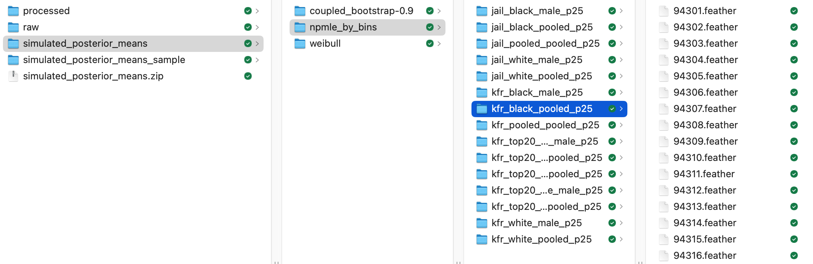

Jiafeng Chen, Stanford University
MS-22935 for Econometrica
This replication package is written with the assistance of GitHub Copilot, OpenAI Codex, and Claude Code.
To regenerate figures and tables without regenerating/re-scoring the Monte Carlo data, simply run after installation:
./generate_assets.shThis writes tables and figures to assets/
The code in this replication package does the following:
simulated_posterior_means.zip)For a partial replication, skip step 2 and use the included pre-computed output.
Three main analysis files generate all 9 figures (5 in the main text, 4 in the online appendix) and 1 table (online appendix).
A full replication of the Monte Carlo (step 2) is time-consuming but extremely parallelizable. See a note below on parallelism for details. Full replication is also tricky because of an upstream problem where long-running Monte Carlos appear to fail silently (see NOTE) - though progress is saved and restarting a script resumes the progress. Please reach out to jiafeng@stanford.edu for a copy of the Monte Carlo output.
Specifically, each exercise runs M iterations for V different outcome variables. Right now the code parallelizes over V but not over M. A rough estimate of time taken is in the table below (your mileage may vary on time per iteration):
| exercise | time per iteration | # total iterations | V | M | max core | estimated total hours at full parallelization |
|---|---|---|---|---|---|---|
| Calibrated simulation | 1 min | 15,000 | 15 | 1,000 | 15 | 16.67 |
| Validation (coupled bootstrap) | ~2 min | 15,000 | 15 | 1,000 | 15 | 33.33 |
| Weibull (OA5.3) | 0.5 min | 600 | 6 | 100 | 6 | 0.83 |
| Additive model (OA5.4) | 0.5 min | 600 | 6 | 100 | 6 | 0.83 |
In lieu of a full replication of the Monte Carlo generation, each Monte Carlo run can also be checked separately (things are time-consuming overall because there are a lot of runs). I provide code for generating specific runs of the Monte Carlo exercise and checking against the data I provided. See NOTE.
All code is in Python, but NPMLE estimation relies on the package
rpy2, R, and Mosek.
The data are taken from the published datasets by Chetty et al. (forthcoming) in Chetty et al. (2022) under CC-BY-4.0. They are available at https://opportunityinsights.org/data/?geographic_level=0&topic=0&paper_id=1652#resource-listing (Accessed 2024-09-16).
[x] I certify that the author(s) of the manuscript have legitimate access to and permission to use the data used in this manuscript.
[x] I certify that the author(s) of the manuscript have documented permission to redistribute/publish the data contained within this replication package. Appropriate permission are documented in the LICENSE (./LICENSE.txt) file.
The data are licensed under a CC-BY-4.0 license. See LICENSE.txt for details.
[x] All data are publicly available
This package builds from the following raw data files, all from Chetty et al. (2022). They are downloaded at https://opportunityinsights.org/data/?geographic_level=0&topic=0&paper_id=1652#resource-listing (Accessed 2024-09-16).
data/raw/tract_covariates.dta ("Neighborhood
Characteristics by Census Tract"): https://opportunityinsights.org/wp-content/uploads/2018/10/tract_outcomes_dta.zip
(Accessed 2024-09-16)
data/raw/tract_outcomes_early.csv ("All Outcomes by
Census Tract, Race, Gender and Parental Income Percentile"): https://opportunityinsights.org/wp-content/uploads/2018/10/tract_outcomes.zip
(Accessed 2024-09-16)
docker group
(sudo usermod -aG docker $USER && newgrp docker).mosek.lic in the project root.docker load < eb-replication.tar.gz)docker compose up -d eb-replication
# eb-replication is a service defined in docker-compose.yml
# eb-replication-test is another that is more suitable for replication the Monte Carlo data
# see documentation in ./docker-compose.yml
docker compose exec eb-replication bashFor detailed troubleshooting and examples, see Docker instructions (./docker-instructions.md).
The docker-compose.yml file also provides an
eb-replication-test service that mounts only raw data and
an empty scratch directory for
/app/data/simulated_posterior_means, so one can test
without touching the already-generated Monte Carlo outputs.
Cleanup: when you're done, stop and remove the containers with
docker compose downUse docker compose down --volumes if you also want to
drop any Docker-managed volumes.
To remove the docker image when one's done:
docker rmi replication-eb-replication:latest. Make sure
replication-eb-replication:latest matches what's shown in
docker images.
If Docker is not an option, use the host installation walkthrough in source-install.md (./source-install.md). It covers:
python -m rpy2.situation,
python test.py, targeted Monte Carlo checks)Use this path only if you are comfortable managing those dependencies manually.
Random seed is set at:
covariate_additive_model.pyempirical_exercise.pyNote: REBayes::GLmix uses REBayes::KWDual
to interact with an underlying MOSEK optimizer. This optimizer may
introduce additional randomness that cannot be seeded from the Python
side. As far as I'm aware, REBayes does not expose a
seeding option for this solver.
The code was last run on a 2022 Mac Studio, 32 GB RAM, Apple M1 Max.
The replication process is modularized as follows. Each step saves output to the disk that the next step depends on. These outputs are included in the replication package transmitted to the data editor, and so partial replications can start from any step. For instance, directly going to step 4 generates all tables and figures.
(Step 1 - Raw data cleaning)
build_data.py performs basic cleaning on the raw
Opportunity Atlas data and saves the processed data in
data/processed/oa_data_used.feather. The rest of the
analysis proceeds only with
data/processed/oa_data_used.feather.
(Step 2 - Monte Carlo data generation) Most
empirical exercises in the paper aggregate over simulation draws that
depend on the cleaned data. These simulation draws---which we refer to
as the Monte Carlo data---are directly saved in
data/simulated_posterior_means/. The subsequent analysis
only depends on the generated Monte Carlo data. This step is
time consuming and error-prone: For a partial replication, one could
directly proceed from the next step or step 4, without re-generating the
Monte Carlo data (pre-computed Monte Carlo data from a previous run
should be included in this replication package - contact jiafeng@stanford.edu if
not).
One could also selectively verify subsets of the output generated by this step, as opposed to regenerating every simulation run: For instance,
# Selective verification of `data/simulated_posterior_means/npmle_by_bins/kfr_top20_black_pooled_p25/94682.feather` (94682=94301+381)
python check_monte_carlo.py --simulator_name npmle_by_bins --est_var kfr_top20_black_pooled_p25 --seed_number 381See NOTE below for detailed instructions.
The Monte Carlo data are generated by the following bash scripts:
./monte_carlo.sh runs the calibrated simulation
exercise./coupled_bootstrap.sh runs the coupled bootstrap
exercise./weibull_model.sh runs the Weibull distribution
exercise in online appendix./additive_model.sh runs an additional model exercise
in online appendix(Step 3 - Computations on the Monte Carlo data whose output
underlies the figures) Various statistics underlying tables and
figures are computed on the Monte Carlo data (We call this
scoring the Monte Carlo data).
./generate_scores.py takes Monte Carlo results in
data/simulated_posterior_means/ and scores them. It saves
results in results/[SimulatorName]/*.csv, where
SimulatorName is one of
{coupled_bootstrap-0.9,
covariate_additive_model, npmle_by_bins,
weibull}
(Step 4 - Tables and figures) Finally, the tables
and figures are generated directly from the output of the last step. How
each table/figure links to each python script is detailed below.
generate_assets.sh simply runs all of them.
Note on figure output: Figures with many scatter points (Figures 1-3) are saved in both PDF and PNG formats. PDF files use rasterized scatter points for smaller file sizes but may display inconsistently across PDF viewers (e.g., missing points in Chrome, artifacts in Preview). PNG files provide reliable viewing across all platforms.
| Content | Script |
|---|---|
| Figures 1–3 | ./assets_introduction.py |
| Footnote 6 voice over | ./assets_introduction.py |
| Figures 4–5 | ./assets_empirical.py |
| Table OA5.1 | ./assets_appendix.py |
| Figures OA5.1–OA5.4 | ./assets_appendix.py |
These steps depend on the following lower-level files:
empirical_exercise.py samples either calibrated
Monte Carlo simulation or coupled bootstrap simulation. It then computes
various posterior mean estimates using various empirical Bayes or
non-empirical Bayes methods. The .sh files in Step 2 are
essentially wrappers that call
empirical_exercise.py.
covariate_additive_model.py runs CLOSE-NPMLE with a
flexible additive model for covariates. This is only relevant for
./additive_model.sh
Helpers:
residualize.py implements linear residualization by
covariatesconditional_means/ contains methods for estimating
conditional meansempirical_bayes/ contains methods for implementing
empirical Bayes methodspostprocessing/ contains methods for computing various
metrics and visualizationsimulator/ contains code for implementing various
methods for simulation synthetic data from raw dataBelow are code snippets for reproducing each step described in the list above. I recommend starting with Steps 3 or 4 to check if everything replicates given the Monte Carlo output. Run all code from the top level of the directory.
The Monte Carlo output should be included as
simulated_posterior_means.zip (please contact jiafeng@stanford.edu if not).
This file can be unzipped into data/, where
data/simulated_posterior_means/ should include three
directories coupled_bootstrap-0.9,
npmle_by_bins, and weibull. Each of these
three directories should then contain subdirectories with variable names
like kfr_black_male_p25. There should be 1000 or 100
.feather files in these directories, with number names:

A full replication of Step 2 is time-consuming, but selective subsets of the output can be checked easily.
Run chmod +x *.sh to allow the .sh files to be run as
executables. Alternatively one may run bash script.sh to
execute them.
# Builds the raw analysis dataset from raw data
python build_data.pyNote: if run inside the eb-replication service, then
this overwrites the current file in data/processed. If one
works with the container eb-replication-test instead of
eb-replication, then app/data/processed in the
container is mounted to ./data/processed_empty.
The following bash commands runs each bash script and generates the Monte Carlo data.
NB: This is the most time-consuming and error-prone step (see NOTE below): The output of this step is included in the replication package directly. Moreover, optionally, instead of fully replicating this step, one could verify a small subset of the Monte Carlo data. The NOTE below includes instructions for doing so.
If one decides to run a full replication, before starting to
replicate, ensure that
data/simulated_posterior_means is empty.
To enforce data/simulated_posterior_means is empty,
start the test service with
docker compose up -d eb-replication-test and work within
the container eb-replication-test instead of
eb-replication; eb-replication-test mounts an
empty scratch directory at
/app/data/simulated_posterior_means (in container) linked
to data/simulated_posterior_means_empty/ (local).
# Run the Monte Carlo
# The following generates results/[simulator-name]
# where [simulator-name] is one of "coupled_bootstrap-0.9",
# "covariate_additive_model", "npmle_by_bins", "weibull"
rm -f logs/* # Clear logs
# -----------------------------------------------------------------------------
# Time consuming, the progress bar is written to std.err, which is written to logs/.
# Can check corresponding files in logs/ to monitor
# (monte_carlo.sh coupled_bootstrap.sh weibull_model.sh) do not need to be run sequentially.
# They can be run concurrently
# With &, scripts run in the background of the terminal session and print a PID for the wrapper process.
# That PID does not own the python workers; use `kill -- -[pid]` (note leading minus) or `pkill -P [pid]` to stop everything.
# ------------------------------------------------
# Calibrated simulation exercise
# Time estimate: (1 minute per iteration x 15000 iterations) / min(#cores, 15)
# The NUM_CORES options below are by default the maximum the code would benefit from.
# Higher core counts won't break anything - the code takes a minimum.
NUM_CORES=15 ./monte_carlo.sh & # To monitor: tail -F logs/mc_error*
# Validation exercise using coupled bootstrap
# Time estimate: (~2 minute per iteration x 15000 iterations) / min(#cores, 15)
NUM_CORES=15 ./coupled_bootstrap.sh & # To monitor: tail -F logs/error_*
# Weibull exercise in OA5.3
# Time estimate: (0.5 minute per iteration x 600 iterations) / min(#cores, 6)
NUM_CORES=6 ./weibull_model.sh & # To monitor: tail -F logs/weibull_error*
# Monitor the progress of everything by counting files in the output directory
# data/simulated_posterior_means
./monitor.sh
# -----------------------------------------------------------------------------
# Additive model exercise in OA5.4
# ***ASSUMES the output from coupled_bootstrap.sh already exists***
# Saves results directly in results/covariate_additive_model/*.csv
# Time estimate: (0.5 minute per iteration x 600 iterations) / min(#cores, 6)
NUM_CORES=6 ./additive_model.sh & # To monitor: tail -F logs/cam_error*### Assumes that data/simulated_posterior_means/ is populated,
### either because Step 2 is run or because the included Monte Carlo
### output simulated_posterior_means.zip is unzipped.
# Clean up the generated raw Monte Carlo results
python generate_scores.py --simulator-name coupled_bootstrap-0.9 --nsim 1000 # ~20 minutes
python generate_scores.py --simulator-name npmle_by_bins --nsim 1000 # ~1.5 minute
python generate_scores.py --simulator-name weibull --nsim 100 # ~5 seconds
# The additive model results are scored directly in additive_model.sh# Generate figures and tables in assets/
# Assumes results/ is correctly populated with scored outputs
./generate_assets.shThe .sh files in step 2 runs the following script in parallel
over est_var
# Generates draws over seeds 94301 - (94301+nsim-1) for simulator [simulator] and outcome variable [est_var]. See table below for combinations of these arguments
python empirical_exercise.py
--simulator-name [simulator-name] \
--methods [methods-for-simulator] \
--nsim [nsim-for-simulator] \
--starting_seed 94301 \
--est_var [est_var]Across the various empirical exercises, est_var ranges
over 6 to 15 choices. As a result, we would only benefit from at most 15
cores.
Alternatively, one could further parallelize by running, e.g., the
following in parallel. This would parallelize within a single
est_var.
# Runs seeds 94301-94800
python empirical_exercise.py --simulator-name [simulator-name] --methods [methods-for-simulator] --nsim 500 --starting_seed 94301 --est_var [est_var]
# Runs seeds 94801-95300
python empirical_exercise.py --simulator-name [simulator-name] --methods [methods-for-simulator] --nsim 500 --starting_seed 94801 --est_var [est_var]Doing so is a little memory inefficient because runs using the same
est_var share underlying data.
| Simulator name | Outcome variable names | Seed range | Methods |
|---|---|---|---|
coupled_bootstrap-0.9 |
One of
("kfr_pooled_pooled_p25" "kfr_white_male_p25" "kfr_black_male_p25" "kfr_black_pooled_p25" "kfr_white_pooled_p25" "jail_black_male_p25" "jail_white_male_p25" "jail_black_pooled_p25" "jail_white_pooled_p25" "jail_pooled_pooled_p25" "kfr_top20_black_male_p25" "kfr_top20_white_male_p25" "kfr_top20_black_pooled_p25" "kfr_top20_white_pooled_p25" "kfr_top20_pooled_pooled_p25") |
94301-95300 | all |
npmle_by_bins |
One of
("kfr_pooled_pooled_p25" "kfr_white_male_p25" "kfr_black_male_p25" "kfr_black_pooled_p25" "kfr_white_pooled_p25" "jail_black_male_p25" "jail_white_male_p25" "jail_black_pooled_p25" "jail_white_pooled_p25" "jail_pooled_pooled_p25" "kfr_top20_black_male_p25" "kfr_top20_white_male_p25" "kfr_top20_black_pooled_p25" "kfr_top20_white_pooled_p25" "kfr_top20_pooled_pooled_p25") |
94301-95300 | all |
weibull |
One of
("kfr_pooled_pooled_p25" "kfr_black_pooled_p25" "jail_black_pooled_p25" "jail_pooled_pooled_p25" "kfr_top20_black_pooled_p25" "kfr_top20_pooled_pooled_p25") |
94301 - 94400 | indep_gauss,close_npmle,close_gauss,close_gauss_parametric |
For some upstream reason having to do with MOSEK or REBayes, running
monte_carlo.sh for many iterations might silently fail, due to a memory
leak. When it fails, the code would appear to run but resource
consumption is low and no new output is generated. Interrupting the code
prints Segmentation fault. I find it quite difficult to
reproduce the issue, as there's no fixed data seed causing a problem.
When this happens, interrupting and restarting resolves the issue. This
has only happened when I repeatedly apply NPMLE to sample new data and
to estimate various methods.
Each Monte Carlo draw results in a file of the form
data/simulated_posterior_means/[SimulatorName]/[VariableName]/[Seed].feather.It is not time-consuming to regenerate and verify a given file - the
number of these files makes it time-consuming overall. I have
included a script that generates a new Monte Carlo draw for a particular
seed seed_number and a particular outcome variable
est_var
# See the table below for valid options for --est_var and --simulator_name
# --est_var: Outcome variable being P(top 20 | Black, pooled, parents at 25th percentile)
# --seed_number: The seed used is 94301 + (seed_number mod seed_range). In this case we check seed 94682
# --simulator_name: Simulator name = npmle_by_bins, coupled_bootstrap-0.9, weibull
python check_monte_carlo.py --est_var kfr_top20_black_pooled_p25 --seed_number 381 --simulator_name npmle_by_binscheck_monte_carlo.py works by generating a specific draw
of the Monte Carlo data, saves it in
data/simulated_posterior_means_sample, and compares it
against its counterpart in data/simulated_posterior_means.
I have found that different hardware/version would only agree up to
something like 1e-6, and so I check agreement between two
files by regressing one on the other. A typical output is as follows
across two machines - the regression fit is essentially perfect.
- Project '~/Library/CloudStorage/Dropbox/research/empirical-bayes/replication' loaded. [renv 1.1.4]
- The project is out-of-sync -- use `renv::status()` for details.
Checking Monte Carlo outputs...
kfr_top20_black_pooled_p25: 100%|███████████████████████████████████████████████████████████████████████████████████████████| 1/1 [00:00<00:00, 14315.03it/s]
--------------------------------------------------
Seed: 94682
Outcome variable: kfr_top20_black_pooled_p25
Simulator name: npmle_by_bins
Correlation between original and new Monte Carlo samples
(some differences may exist due to hardware or version):
--------------------------------------------------
Correlation Intercept Regression Coef
naive 1.000000 -1.370503e-07 1.000000
indep_npmle 0.999999 5.062243e-07 0.999980
indep_gauss 1.000000 1.034661e-06 0.999973
close_npmle 1.000000 -8.168789e-08 1.000002
close_gauss 1.000000 1.060407e-07 0.999997
close_gauss_parametric 1.000000 3.004981e-07 0.999993
oracle 1.000000 -2.953876e-07 1.000003
truth 1.000000 -2.181302e-07 1.000002
indep_npmle_nocov 1.000000 -4.812911e-07 1.000013
indep_gauss_nocov 0.999999 -5.065023e-07 1.000019
close_npmle_nocov 1.000000 -1.943102e-07 1.000002
close_gauss_nocov 1.000000 -1.923112e-07 1.000001
close_gauss_parametric_nocov 1.000000 -1.189520e-07 1.000000
true_covariate_fn 1.000000 -2.741553e-14 1.000000
truth_residualized 1.000000 -2.106331e-07 1.000003
--------------------------------------------------Chetty, Raj, John Friedman, Nathaniel Hendren, Maggie R. Jones, and Sonya R. Porter, “Replication Data for: The Opportunity Atlas: Mapping the Childhood Roots of Social Mobility,” 2022.
Chetty, Raj, John Friedman, Nathaniel Hendren, Maggie R. Jones, and Sonya R. Porter, “The opportunity atlas: Mapping the childhood roots of social mobility,” American Economic Review, forthcoming.
O. Tange (2018): GNU Parallel 2018, March 2018, https://doi.org/10.5281/zenodo.1146014.